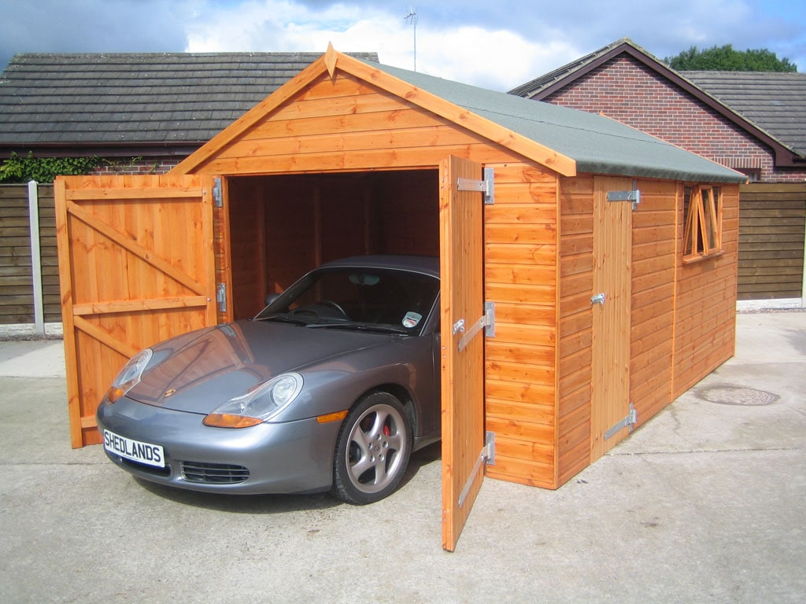

Как выбрать хороший гараж
В современном мире автомобиль уже не роскошь, а удобное средство передвижения. Сегодня автомобиль есть почти в каждой семье и возможно даже не один. И с увеличением количества транспортных средств встает очевидный вопрос: “где же его хранить”.

Если вы хотите обезопасить свой автомобиль от угона, нанесения какого-либо ущерба хулиганами, или погодными явлениями при этом, чтобы у вас всегда было личное парковочное место, которое никогда не займут. Вам стоит задуматься о приобретении или аренде гаража.
На что стоит обратить внимание при выборе гаража:
- Первое на что стоит обратить внимание при выборе гаража - это его месторасположение. Гараж должен быть расположен возле дома, либо вблизи остановок общественного транспорта.
- Если вы планируете хранить машину в гараже и зимой, предпочтение стоит отдать не отапливаемому гаражу. При резком перепаде температур (из мороза в теплое помещение) на машине скапливается конденсат и машина быстрее гниет.
- Есть ли охрана. В гаражно строительном кооперативе периметр должен быть замкнут и иметь 1-2 въезда. В противном случае будет проходной двор.
- Обратите внимание на ширину проезда, чем шире тем лучше. В идеале ширина двух машин, чтобы удобно было разъезжаться.
- Также ответьте для себя на вопрос: “Планируете ли вы самостоятельно ремонтировать свой автомобиль или хранить в гараже продуктовые заготовки”. Исходя из ответа определитесь нужна ли вам смотровая яма, либо погреб.
- Смотровая яма. На стенах ямы не должно быть следов стоячей воды. В яме должна быть вентиляции, если яма не вентилируема, то вся сырость будет конденсироваться на днище вашего автомобиля, и оно будет гнить. В идеале если вход в яму будет расположен сбоку, это удобно когда над ямой припаркован автомобиль.
- Погреб должен быть утеплен, минимум утеплены потолок и стены которые контактируют с холодной ямой. Должна быть вентиляция. Также стоит уделить внимание нет ли на стенах следов стоячей воды.
- Размер гаража должен быть в 1.5-2 раза больше размеров вашего автомобиля. Если вы планируете использовать гараж, как мини мастерскую - то размеры гаража лучше увеличить до 2-2,5 габаритов вашей машины.
- Электричество. Если выбираете гараж с электричеством, проверьте работоспособность всех розеток и выключателей, наличие отдельного щитка, наличие приборов учета. Все розетки и выключатели должны быть расположены минимум в метре от земли. Приобретая гараж в ГСК советуем пообщаться с соседями по гаражу и выяснить нет ли перебоев с электричеством.
- Вентиляция. Наличие вентиляции обеспечивает в гараж приток свежего воздуха при закрытых воротах.
- Ворота в гараж должны быть металлические не заржавленные. На них должны быть установлены противосъемные элементы. В противном случае, если петли срежут, то ворота просто упадут.
- Низ ворот должен находится выше уровня дороги. Если этого уклона не будет, то у ворот будет накапливаться вода, которая зимой замерзнет и ворота не откроются.
- Обратите внимание на наличие калитки в заборе. Она обеспечит свободный доступ в гараж, когда зимой наметёт снег.
- На воротах должно быть два замка с разными механизмами.
- На крыше и стыках потолка не должно быть подтеков.
- При выборе гаража в многоуровневом паркинге, предпочтительно выбирать гараж на верхнем уровне. Зачастую гаражи на нижних уровнях подтапливает, и бывают проблемы с вентиляцией.


После того, как определитесь с выбранным гаражом остается документально оформить сделку.
Некоторые советы перед оформлением сделки:
- Покупайте гараж напрямую у собственника.
- Сверьте площадь гаража с указанной в объявлении. Если площадь в объявлении завышена, то это повод для торга.
- Покупайте только приватизированные гаражи. Даже если владелец утверждает, что это легко и просто сделать - не верьте ему. Например, наличие городской канализации вблизи ГСК сделает процесс приватизации невозможным, а в случае ремонта этой канализации этот гараж вообще могут снести.
- Уточните у председателя ГСК, нет ли у собственника гаража долгов.
- Договор купли продажи гаража обязательно оформляется в трех экземплярах Один экземпляр покупателю, второй для продавца, третий экземпляр для регистрационной палаты.
- Обязательно зарегистрируйте договор в регистрационной палате.
 Договор купли-продажи автомобиля. Бланк 2020 года в формате Word
Договор купли-продажи автомобиля. Бланк 2020 года в формате Word Договор купли-продажи автомобиля. Бланк 2020 года в формате PDF
Договор купли-продажи автомобиля. Бланк 2020 года в формате PDF Акт приёма-передачи автомобиля Word 2007 - 2013
Акт приёма-передачи автомобиля Word 2007 - 2013